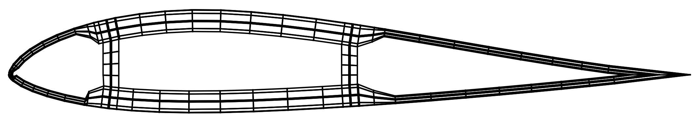

Computing Stiffness and Mass Matrices
Cross section stiffness and inertial properties are provided as direct inputs for most of the examples in this package. In general, however, we need to compute these section properties from input geometry and material properties.
We implemented the 2D finite element procedure described by Giavotto et al. and that is also described in the BECAS User Guide. This approach is much more accurate than those based on classical laminate theory, especially for coupled and transverse stiffnesses, and of course is much more accurate for thicker sections. Our implementation uses bilinear quadrilateral (Q4) elements, and is tailored for use in design optimization. First, the implementation is fast. The memory for all large matrices is preallocated, in sparse formats where applicable. This allows operations to be done in place for subsequent iterations within an optimization. We also save the matrix factorization in the linear solve and use sparse solvers. Second, meshes are carefully resized to avoid discrete jumps in properties as airfoil/thickness dimensions change.
There are two main ways to compute section properties using this package. The first is from explicit creation of a mesh, i.e., nodes and elements. This is the most general approach, and can be used for any shape. However, as our primary usage is for airfoils, we have a second convenience function that generates the nodes and elements for a parameterized airfoil. This approach does not require understanding the format of nodes and elements, but rather the specificiations for the paramterized airfoil. Other convenience functions could be created for other common geometries. These two different approaches are explained below, but before describing them we note the material definition as that is needed in both methods.
Material Properties
We can specify a general orthotropic Material with three independent Young's moduli, shear moduli, Poisson's ratios, and the material density. $E_i$ is the Young's modulus along axis $i$, $G_{ij}$ is the shear modulus in direction $j$ on the plane whose normal is in direction $i$, and $\nu_{ij}$ is the Poisson’s ratio that corresponds to a contraction in direction $j$ when an extension is applied in direction $i$ (from symmetry the opposite definitions would also apply, where we swap $i$ and $j$). Also from symmetry we know that $\nu_{ij} E_j = \nu_{ji} E_i$. For example:
using GXBeam
E1 = 10e9
E2 = 5e9
E3 = 5e9
G12 = 8e9
G13 = 4e9
G23 = 4e9
nu12 = 0.3
nu13 = 0.3
nu23 = 0.3
rho = 1.8e3
mat = Material(E1, E2, E3, G12, G13, G23, nu12, nu13, nu23, rho)The ply, element, and beam coordinate systems are shown below. Axis 1 is along the ply main fiber direction, 2 is the transverse direction, and 3 is normal to the ply. For a wing/blade 1 is nominally along the span/radius, 2 is tangent to airfoil, and 3 is normal to airfoil (these are nominal as they would only be exact if the fiber orientation, $\theta$, is 0 degrees).

Nodes and Elements
The structure is discretized into nodes. A Node is a point given by an x, y coordinate pair.
x = 0.0
y = 0.0
node = Node(x, y)Of course, a structure has many nodes, and these should be assembled in a vector of nodes. The node number is given by the vector index. In this example we create four nodes in the shape of a square from which we can later construct an element.
x = 0.0
y = 0.0
node1 = Node(x, y)
x = 1.0
y = 0.0
node2 = Node(x, y)
x = 1.0
y = 1.0
node3 = Node(x, y)
x = 0.0
y = 1.0
node4 = Node(x, y)
nodes = [node1; node2; node3; node4]The structure is constructed with elements. Each MeshElement is made of four nodes, ordered as shown below Each element also has a material, and that material has a fiber orientation $\theta$ (see previous figure).

nodenumbers = [1, 2, 3, 4]
material = mat
theta = 20*pi/180
element = MeshElement(nodenumbers, material, theta)A mesh would then consist of an array of nodes and an array of elements. As an example we construct a mesh for the square cross section with isotropic material shown in the BECAS User Guide (which is just a square of side length 0.1). We discretize the square into 100 equally-sized elements, 10 in each dimension.
iso = Material(100.0, 100.0, 100.0, 41.667, 41.667, 41.667, 0.2, 0.2, 0.2, 1000.0)
x = range(-0.05, 0.05, length=11)
y = range(-0.05, 0.05, length=11)
nodes = Vector{Node{Float64}}(undef, 11*11)
elements = Vector{MeshElement{Vector{Int64},Float64}}(undef, 10*10)
let
m = 1
for i = 1:11
for j = 1:11
nodes[m] = Node(x[i], y[j])
m += 1
end
end
m = 1
for i = 1:10
for j = 1:10
elements[m] = MeshElement([11*(i-1)+j, 11*(i)+j, 11*(i)+j+1, 11*(i-1)+j+1], iso, 0.0)
m += 1
end
end
endWith the mesh constructed we can now compute the compliance matrix. The compliance_matrix is computed about the shear center.
S, sc, tc = compliance_matrix(nodes, elements)S is the compliance matrix, sc is the x and y coordinates for the shear center, and tc is the x and y coordinates for the tension center. These coordinates are relative to the origin (0, 0) of the mesh.
Inertial properties can be computed from the mass_matrix function:
M, mc = mass_matrix(nodes, elements)where M is the mass matrix and mc is the x and y coordinates for the mass center.
Airfoil Shape
The airfoil outer mold line is defined by a set of x, y coordinates, normalized by chord. The points must start at the trailing edge, traverse counterclockwise (i.e., upper surface first), and end at the trailing edge as shown below. The trailing edge can be blunt or sharp. For the former the trailing edge would start and end at different points, and in the later they would be the same point.

In this example we will use ST1 for the MH-104 airfoil described in the paper by Chen, Yu, and Capellaro.
xaf = [1.00000000, 0.99619582, 0.98515158, 0.96764209, 0.94421447, 0.91510964, 0.88074158, 0.84177999, 0.79894110, 0.75297076, 0.70461763, 0.65461515, 0.60366461, 0.55242353, 0.50149950, 0.45144530, 0.40276150, 0.35589801, 0.31131449, 0.26917194, 0.22927064, 0.19167283, 0.15672257, 0.12469599, 0.09585870, 0.07046974, 0.04874337, 0.03081405, 0.01681379, 0.00687971, 0.00143518, 0.00053606, 0.00006572, 0.00001249, 0.00023032, 0.00079945, 0.00170287, 0.00354717, 0.00592084, 0.01810144, 0.03471169, 0.05589286, 0.08132751, 0.11073805, 0.14391397, 0.18067874, 0.22089879, 0.26433734, 0.31062190, 0.35933893, 0.40999990, 0.46204424, 0.51483073, 0.56767889, 0.61998250, 0.67114514, 0.72054815, 0.76758733, 0.81168064, 0.85227225, 0.88883823, 0.92088961, 0.94797259, 0.96977487, 0.98607009, 0.99640466, 1.00000000]
yaf = [0.00000000, 0.00017047, 0.00100213, 0.00285474, 0.00556001, 0.00906779, 0.01357364, 0.01916802, 0.02580144, 0.03334313, 0.04158593, 0.05026338, 0.05906756, 0.06766426, 0.07571157, 0.08287416, 0.08882939, 0.09329359, 0.09592864, 0.09626763, 0.09424396, 0.09023579, 0.08451656, 0.07727756, 0.06875796, 0.05918984, 0.04880096, 0.03786904, 0.02676332, 0.01592385, 0.00647946, 0.00370956, 0.00112514, -0.00046881, -0.00191488, -0.00329201, -0.00470585, -0.00688469, -0.00912202, -0.01720842, -0.02488211, -0.03226730, -0.03908459, -0.04503763, -0.04986836, -0.05338180, -0.05551392, -0.05636585, -0.05605816, -0.05472399, -0.05254383, -0.04969990, -0.04637175, -0.04264894, -0.03859653, -0.03433153, -0.02996944, -0.02560890, -0.02134397, -0.01726049, -0.01343567, -0.00993849, -0.00679919, -0.00402321, -0.00180118, -0.00044469, 0.00000000]Next, we define the chord length, the twist angle, and the pitch axis. The pitch axis is the x-coordinate, measured back from the leading edge, normalized by chord, that defines where the airfoil should be twisted about as seen in the figure below. So a pitch axis of 0.25 means that the airfoil rotates about the quarter chord. Positive twist is in the direction of increasing angle of attack. In our case the twist is zero so the pitch axis is irrelevant though we use the value noted in the paper.

chord = 1.9
twist = 0.0*pi/180
paxis = 0.4750 / chordWe now define the materials we will use in our layup. There are five materials in this case, and for convenience we put them in an array so we can refer to them by number.
uni = Material(37.00e9, 9.00e9, 9.00e9, 4.00e9, 4.00e9, 4.00e9, 0.28, 0.28, 0.28, 1.86e3)
double = Material(10.30e9, 10.30e9, 10.30e9, 8.00e9, 8.00e9, 8.00e9, 0.30, 0.30, 0.30, 1.83e3)
gelcoat = Material(1e1, 1e1, 1e1, 1.0, 1.0, 1.0, 0.30, 0.30, 0.30, 1.83e3)
nexus = Material(10.30e9, 10.30e9, 10.30e9, 8.00e9, 8.00e9, 8.00e9, 0.30, 0.30, 0.30, 1.664e3)
balsa = Material(0.01e9, 0.01e9, 0.01e9, 2e5, 2e5, 2e5, 0.30, 0.30, 0.30, 0.128e3)
mat = [uni, double, gelcoat, nexus, balsa]The heart of the parmeterization is defining the ply sequence. A single ply (or multiple plys of the same material and orientation) is given by a Layer. A Layer is defined by a material, a thickness, and a fiber orientation. Thicknesses are absolute (not normalized), and orientation angles should be in radians. For example:
t = 0.001
theta = 20*pi/180
layer = Layer(balsa, t, theta)A given segment on the airfoil will have multiple layers, which defines the ply sequencing at that section (see figure below).  For example the first segment of this airfoil uses three materials: a gelcoat followed by nexus then the double-bias FRP. Note that the sequencing always starts from the outer edge of the airfoil. Recall that we placed our materials in an array so we can refer to them by number. We then use broadcasting to create a vector of these three layers.
For example the first segment of this airfoil uses three materials: a gelcoat followed by nexus then the double-bias FRP. Note that the sequencing always starts from the outer edge of the airfoil. Recall that we placed our materials in an array so we can refer to them by number. We then use broadcasting to create a vector of these three layers.
idx = [3, 4, 2] # material index
t = [0.000381, 0.00051, 18*0.00053]
theta = [0, 0, 20]*pi/180
layup1 = Layer.(mat[idx], t, theta)This particular airfoil is made up of four separate segments, so we now define the next three using the specifications from the document.
idx = [3, 4, 2]
t = [0.000381, 0.00051, 33*0.00053]
theta = [0, 0, 20]*pi/180
layup2 = Layer.(mat[idx], t, theta)
idx = [3, 4, 2, 1, 5, 1, 2]
t = [0.000381, 0.00051, 17*0.00053, 38*0.00053, 1*0.003125, 37*0.00053, 16*0.00053]
theta = [0, 0, 20, 30, 0, 30, 20]*pi/180
layup3 = Layer.(mat[idx], t, theta)
idx = [3, 4, 2, 5, 2]
t = [0.000381, 0.00051, 17*0.00053, 0.003125, 16*0.00053]
theta = [0, 0, 20, 0, 0]*pi/180
layup4 = Layer.(mat[idx], t, theta)These four layups correspond four different regions of the airfoil. We concatenate them into a vector called segments.
segments = [layup1, layup2, layup3, layup4]We need to define over what region each layup corresponds to. We do this by providing the normalized x locations as breakpoints.
xbreak = [0.0, 0.0041, 0.1147, 0.5366, 1.0]The above means that layup 1 applies from x/c = 0 to 0.0041, layup 2 from x/c = 0.0041 to 0.1147, and so on.
Shear webs are defined in the same way as segments. Each web has a stack of layers, and the airfoil can have as many webs as desired. In our case, we have two webs, both with the same ply stack. The ordering if from the leading edge side towards the trailing edge, although usually the web layups are symmetric anyway.
idx = [1, 5, 1]
t = [38*0.00053, 0.003125, 38*0.00053]
theta = [0, 0, 0]*pi/180
web = Layer.(mat[idx], t, theta)
webs = [web, web]We also need to define the normalized x location of each web center.
webloc = [0.15, 0.5]Thus, our first web is at x/c = 0.15, the second at x/c = 0.5.
We now have all the information we need to create the structural mesh using the afmesh function.
nodes, elements = afmesh(xaf, yaf, chord, twist, paxis, xbreak, webloc, segments, webs)We can now compute compliance_matrix and inertial matices (mass_matrix) in the same manner as shown in the prior section.
S, sc, tc = compliance_matrix(nodes, elements)
M, mc = mass_matrix(nodes, elements)For optimization usage, one should also initialize the cache upfront (see initialize_cache). Then re-use that cache for subsequent calls to compliance_matrix. That wiill avoid recreating the cache at each iteration and will speed up computation. The cache does not needed to be re-initialized as long as the matrix sizes stay constant (the geometry can change sizes, but the overall mesh connectivity remains the same, which should be the case during gradient-based design optimization) If passing derivatives through with ForwardDiff make sure to set the d parameter of initialize_cache, which is the number of design variables. See the sectionwrapper function in the unit tests for section.jl for an example.
cache = initialize_cache(nodes, elements)
S, sc, tc = compliance_matrix(nodes, elements, cache=cache) # these calls are now much faster
S, sc, tc = compliance_matrix(nodes, elements, cache=cache)For visualizing the mesh there is a provided helper function plotmesh. It uses PyPlot, although that must be loaded on the user-side and passed in as it is not a dependency in the package.
using PyPlot
figure(); plotmesh(node, elements, PyPlot)
Airfoil Mesh Control
A few additional parameters are available to control the airfoil meshing. By default the mesh is discretized in the tangential direction using the airfoil coordinates. In other words, to get a finer mesh in this direction we could specify more airfoil points. By default the mesh in the normal direction uses the layers defined by the segments. Since we use the same number of elements for each segment, we subdivide some layers as needed (and thus the segment with the most layers defines the number of elements). In our above example the the third segment has the most layers (7) so we discretize the mesh with 7 elements in the tangential direction for all segments. To get a finer mesh in this direction we could breakup a segment into more layers (for example a layer of material 1 of 0.1 thickness could be divided into four layers of material 1 with 0.025 thickness).
However, doing this remeshing manually is a bit tedious so there are functions that can automate this. First, there are two optional parameters that control the desired spacing in the tangential and normal directions. The first is "ds", which if provided, will resample the airfoil with approximately this spacing, normalized by chord. For example, ds=0.01 will create points on the airfoil spaced roughly 1% chord apart. Siimilarly, there is an optional parameter "dt", which resamples the thicknesses with this maximium mesh size (thickness is absolute). For example, dt=0.01, will target a maximum element thickness of 0.01. Recall that the total number of elements remains constant along the airfoil, so most thicknesses will less than this value. This same parameter is used for discretizing along the thickness of the webs.
These two parameters are simple to use, but are typically not desirable for gradient-based optimization if ply thicknesses or airfoil coordinates are changed. This is because a fixed element size will experience discrete jumps as the airfoil is resized. Thus, rather than specify a fixed element size, we should specify a fixed number of elements. The optional parameters ns and nt provide this functionality.
The parameter ns is an array specifying the number of elements to create in each segment. In our case we have four different segments so we could define an array like: ns = [15, 20, 40, 30]. This is less convenient as it is not as immediately obvious how many elements should to put in each sector in order to provide a consistently spaced mesh. However, as the airfoil shape changes, the mesh will simply stretch/shrink and never experience discrete jumps. Similarly, we can specify nt to define the number of elements to use across the thickness. The parameter nt is actually an array of arrays. Each subaray defines how many elements should be used for each layer. For example nt = [[1, 1, 5], [1, 1, 5], [1, 1, 1, 1, 1, 1, 1], [1, 1, 2, 1, 2]] would subdivide the innermost layer of the first segment into 5 elements, and so on.
Finally, for discretizing along the webs we can use wns and wnt. The parmeter wns is an integer and specifies the number of elements to use along the height of the web (same definition as ns but a web only needs one number). The default is four. The parameters wnt has the same definition as nt but applies to the webs.
This page was generated using Literate.jl.